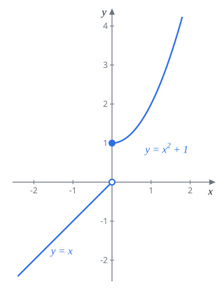
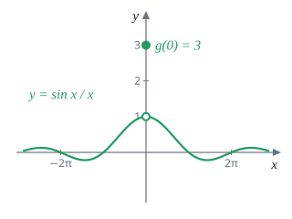
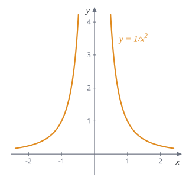
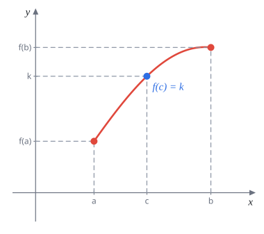
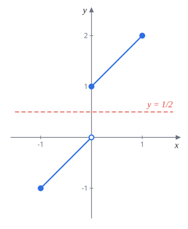
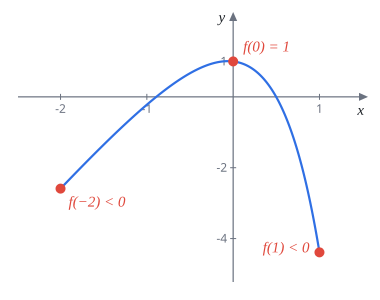
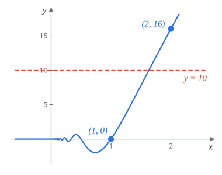

Week 3 連續性（Continuity）
AP Calculus I（115 學年）Lecture Note 3 教學與題解
講義筆誤讀講義時請自己改正兩處：
- p.20 $4x^2\sin\left(\frac{\pi}{x}\right)$ 那題的答案寫 $f(1)=-4$，但 $\sin\pi=0$，應為 $f(1)=0$。結論 $f(1)\lt 10\lt f(2)$ 不受影響（見題 12）。
- p.20 不動點定理的證明，Case 2 寫「考慮 $0\lt f(0),f(1)\lt 1$」，少了一些情形，例如 $f(0)=1$、$f(1)=0$ 兩個 Case 都沒涵蓋。Case 2 應改成「$f(0)\gt 0$ 且 $f(1)\lt 1$」，也就是 Case 1 以外的全部情形（見題 8）。
3.1 連續的定義
直覺上，函數在 $x=a$ 連續就是圖形在那裡筆不用離開紙：沒有斷掉、沒有跳、沒有挖洞。用極限的語言說，就是「$x$ 靠近 $a$ 時，$f(x)$ 靠近的值」剛好等於「$f$ 在 $a$ 真正的值」。
定義 3.1.1若 $\displaystyle\lim_{x\to a}f(x)=f(a)$，稱 $f$ 在 $x=a$ 連續。若 $f$ 在區間 $I$ 的每一點都連續，稱 $f$ 在 $I$ 上連續。
這一行其實藏了三個條件，任何一個不成立就不連續：
- $f(a)$ 有定義；
- $\lim_{x\to a}f(x)$ 存在（左極限等於右極限）；
- 兩者相等。
事實多項式、指數函數、三角函數、它們的反函數，以及這些函數的加減乘除，在各自的定義域上都連續。合成也保持連續。
這個事實最常見的用法是：連續函數的極限可以直接代值。而且如果外層 $g$ 連續，極限可以搬進去：
$$\lim_{x\to a}g\bigl(h(x)\bigr)=g\Bigl(\lim_{x\to a}h(x)\Bigr)$$解題套路分段函數要在整條線上連續，各段本身通常已經連續，只要檢查接縫點：左邊那段的極限、右邊那段的極限、函數值三者相等，列出方程式解參數。
題 1$f$ 的定義域是 $(-\pi,\pi)$， $$f(x)=\begin{cases}\dfrac{x}{a\sin x}, & -\pi\lt x\lt 0\\[2mm] x^2+5, & 0\le x\lt \pi\end{cases}$$ 若 $f$ 處處連續，求 $a$。
兩段在各自範圍內都連續（左段分母 $\sin x$ 在 $(-\pi,0)$ 不為 0），只要看接縫 $x=0$。
右邊：$f(0)=0+5=5$，右極限也是 $5$。
左邊：用 $\displaystyle\lim_{x\to0}\frac{\sin x}{x}=1$，
$$\lim_{x\to0^-}\frac{x}{a\sin x}=\frac1a\cdot\lim_{x\to0^-}\frac{1}{\frac{\sin x}{x}}=\frac1a$$連續要求 $\dfrac1a=5$。
$a=\dfrac15$
題 2求 $\displaystyle\lim_{x\to0}\cos\left(\frac{\sin x}{x}\cdot\pi\right)$。
$\cos$ 連續，極限搬進去：
$$\lim_{x\to0}\cos\left(\frac{\sin x}{x}\cdot\pi\right)=\cos\left(\pi\cdot\lim_{x\to0}\frac{\sin x}{x}\right)=\cos(\pi\cdot1)$$$-1$
題 3求下列極限。
(a) $\displaystyle\lim_{x\to1}2^{\sin(2\tan^{-1}x)}$ (b) $\displaystyle\lim_{x\to+\infty}\sin\bigl(\tan^{-1}x\bigr)$ (c) $\displaystyle\lim_{x\to0^+}x^{\ln x}$
三題都是一層一層往裡面代。
(a) $\tan^{-1}1=\dfrac\pi4$，所以 $\sin\left(2\cdot\frac\pi4\right)=\sin\frac\pi2=1$，答案 $2^1=2$。
(b) $x\to+\infty$ 時 $\tan^{-1}x\to\dfrac\pi2$（Week 1 的反正切值域是 $\left(-\frac\pi2,\frac\pi2\right)$，圖形有水平漸近線 $y=\frac\pi2$）。$\sin$ 連續，答案 $\sin\frac\pi2=1$。
(c) 底數和指數都在變，先換成 $e$ 的次方：
$$x^{\ln x}=e^{\ln x\cdot\ln x}=e^{(\ln x)^2}$$$x\to0^+$ 時 $\ln x\to-\infty$，平方後 $(\ln x)^2\to+\infty$，所以 $e^{(\ln x)^2}\to+\infty$。
(a) $2$ (b) $1$ (c) $+\infty$（三題都與講義答案相同）
3.2 不連續的種類
連續的三個條件壞掉的方式不同，就分成不同的不連續。
定義 3.1.2設 $f$ 在 $x=a$ 不連續。
- 跳躍不連續：左右極限都存在但 $\displaystyle\lim_{x\to a^-}f(x)\ne\lim_{x\to a^+}f(x)$。圖形在 $a$ 斷成上下兩截。
- 可去不連續：$\displaystyle\lim_{x\to a^-}f(x)=\lim_{x\to a^+}f(x)=L$，但 $L\ne f(a)$。圖形只是挖了一個洞、把那一點放到別處。只要把 $f(a)$ 改成 $L$ 就連續了，所以叫可去。
若左、右極限至少有一個不存在或是無窮大，稱為本質不連續，例如 $f(x)=\dfrac{1}{x^2}$ 在 $x=0$。另外，$f(a)$ 根本沒定義、但極限存在的情形（例如 $\frac{\sin x}{x}$ 在 $0$）一般也歸為可去不連續，補上 $f(a)=L$ 就好。
題 4判斷下面兩個函數在 $x=0$ 的不連續是哪一種： $$f(x)=\begin{cases}x, & x\lt 0\\ x^2+1, & x\ge 0\end{cases}\qquad g(x)=\begin{cases}\dfrac{\sin x}{x}, & x\ne0\\[2mm] 3, & x=0\end{cases}$$
$f$：左極限 $\displaystyle\lim_{x\to0^-}x=0$，右極限 $\displaystyle\lim_{x\to0^+}(x^2+1)=1$。兩邊都存在但不相等，是跳躍不連續。
$g$：$\displaystyle\lim_{x\to0}\frac{\sin x}{x}=1$，左右極限都是 $1$，但 $g(0)=3\ne1$，是可去不連續。把 $g(0)$ 改成 $1$ 就連續。
$f$：跳躍不連續；$g$：可去不連續



題 5求 $a,b$ 使 $f$ 處處連續： $$f(x)=\begin{cases}\dfrac{x^2-4}{x-2}, & x\lt 2\\[2mm] ax^2-bx+3, & 2\le x\lt 3\\[1mm] 2x-a+b, & x\ge 3\end{cases}$$
三段各自連續（第一段 $x\lt 2$ 不含分母為 0 的點），檢查接縫 $x=2$ 與 $x=3$。
$x=2$：左邊 $\dfrac{x^2-4}{x-2}=x+2\to4$；中間那段在 $2$ 的值是 $4a-2b+3$。
$$4a-2b+3=4\ \Longrightarrow\ 4a-2b=1$$$x=3$：中間那段的左極限 $9a-3b+3$；右段的值 $6-a+b$。
$$9a-3b+3=6-a+b\ \Longrightarrow\ 10a-4b=3$$第一式乘 2 得 $8a-4b=2$，與第二式相減：$2a=1$，$a=\frac12$，代回 $2-2b=1$，$b=\frac12$。
驗算：$x=2$ 處 $2-1+3=4$ ✓；$x=3$ 處 $\frac92-\frac32+3=6$，$6-\frac12+\frac12=6$ ✓。
$a=b=\dfrac12$（與講義答案相同）
題 6（挑戰題）求下列函數在哪些 $x$ 連續。
$$\text{(a) }f(x)=\begin{cases}0, & x\text{ 為有理數}\\ 1, & x\text{ 為無理數}\end{cases}$$ $$\text{(b) }f(x)=\begin{cases}0, & x\text{ 為有理數}\\ x, & x\text{ 為無理數}\end{cases}$$ $$\text{(c) }f(x)=\begin{cases}\dfrac1q, & x=\dfrac pq\text{ 為最簡分數，}q\gt 0\\[2mm] 0, & x\text{ 為無理數}\end{cases}$$關鍵事實：任何一個小區間裡都同時有無限多個有理數和無理數。所以不管 $x$ 多靠近 $a$，都可以只挑有理數靠近，也可以只挑無理數靠近。兩種靠法得到的值不同，極限就不存在。
(a) 任一點 $a$ 附近，沿有理數 $f=0$、沿無理數 $f=1$，極限不存在。處處不連續。
(b) 沿有理數 $f(x)=0\to0$，沿無理數 $f(x)=x\to a$。
- $a\ne0$：兩個靠近值 $0$ 和 $a$ 不同，極限不存在，不連續。
- $a=0$：不管哪種 $x$ 都有 $|f(x)|\le|x|$，由夾擠 $\lim_{x\to0}f(x)=0=f(0)$，連續。
(c)（Thomae 函數）
- 有理數點 $a=\frac pq$：$f(a)=\frac1q\gt 0$，但沿著無理數靠近 $a$，函數值都是 $0$，所以極限若存在只能是 $0\ne f(a)$。不連續。（$0=\frac01$ 也是有理數，$f(0)=1$，同樣不連續。）
- 無理數點 $a$：$f(a)=0$，要說明 $x\to a$ 時 $f(x)\to0$。無理數 $x$ 的 $f(x)=0$ 沒問題；麻煩的是有理數。給任意小的門檻 $\frac1N$，在 $(a-1,a+1)$ 裡分母 $q\le N$ 的有理數只有有限多個（每個 $q$ 最多 $2q$ 個），而且都不等於 $a$。把 $x$ 限制在離 $a$ 比它們都近的範圍內，那裡的有理數分母都 $\gt N$，$f(x)\lt\frac1N$。門檻可以任意小，所以極限是 $0=f(a)$，連續。
(a) 處處不連續 (b) 只在 $x=0$ 連續 (c) 在所有無理數連續、所有有理數不連續
3.3 中間值定理
連續函數畫在紙上是一筆畫到底的。如果起點高度是 $f(a)$、終點高度是 $f(b)$，中間任何一個高度 $k$ 都一定會經過，不可能跳過去。
定理 3.1.1（中間值定理，IVT）$f$ 在 $[a,b]$ 上連續，$k$ 介於 $f(a)$ 與 $f(b)$ 之間，則存在 $c\in[a,b]$ 使 $f(c)=k$。

最常用的情形是 $k=0$：
定理 3.1.2（勘根定理）$f$ 在 $[a,b]$ 上連續，且 $f(a)$、$f(b)$ 一正一負，則 $a,b$ 之間存在 $c$ 使 $f(c)=0$。
解題套路要證明方程式 $\text{左}=\text{右}$ 有解：
- 移項令 $g(x)=\text{左}-\text{右}$，題目變成找 $g$ 的根；
- 說明 $g$ 在某個 $[a,b]$ 上連續（這步不能省，題 9 會看到省掉的下場）；
- 找兩個好算的點讓 $g$ 一正一負，套勘根定理。
IVT 只保證存在，不告訴你 $c$ 是多少，也不保證只有一個。
題 7證明方程式 $\sin x=\dfrac{1}{1+x^2}$ 有解。
令 $g(x)=\sin x-\dfrac{1}{1+x^2}$。$\sin x$ 連續，$\frac{1}{1+x^2}$ 的分母永遠 $\ge1$，也連續，所以 $g$ 在整條實數線上連續。
挑 $x=0$ 與 $x=\frac\pi2$：
$$g(0)=0-1=-1\lt 0,\qquad g\left(\tfrac\pi2\right)=1-\frac{1}{1+\frac{\pi^2}{4}}\gt 0$$（後者因為 $1+\frac{\pi^2}4\gt 1$，分數小於 1。）由勘根定理，存在 $c\in\left(0,\frac\pi2\right)$ 使 $g(c)=0$，即 $\sin c=\dfrac{1}{1+c^2}$。
在 $\left(0,\frac\pi2\right)$ 內有解
題 8（Brouwer 不動點定理，一維版）若 $f(c)=c$，稱 $c$ 是 $f$ 的不動點。證明：定義域為 $[0,1]$、值域含於 $[0,1]$ 的連續函數一定有不動點。
圖形上看：$f$ 的圖形從左邊界 $x=0$ 走到右邊界 $x=1$，高度一直在 $0$ 到 $1$ 之間，對角線 $y=x$ 從左下角連到右上角。一筆畫過去一定會碰到對角線，交點就是不動點。
$f(c)=c$ 等價於 $f(c)-c=0$，令 $g(x)=f(x)-x$，在 $[0,1]$ 上連續。
Case 1：$f(0)=0$ 或 $f(1)=1$，不動點已經找到。
Case 2：其餘情形，即 $f(0)\ne0$ 且 $f(1)\ne1$。因為值域在 $[0,1]$，這代表 $f(0)\gt 0$ 且 $f(1)\lt 1$，所以
$$g(0)=f(0)\gt 0,\qquad g(1)=f(1)-1\lt 0$$由勘根定理，存在 $c\in(0,1)$ 使 $g(c)=0$，即 $f(c)=c$。
得證
講義的 Case 2 寫成 $0\lt f(0),f(1)\lt 1$，漏掉了 $f(0)=1$ 或 $f(1)=0$ 的情形。上面改成 $f(0)\gt 0$ 且 $f(1)\lt 1$ 才完整，證明本身的想法不變。
題 9$f(x)=\begin{cases}x+1, & x\in[0,1]\\ x, & x\in[-1,0)\end{cases}$。說明 $f$ 在 $x=0$ 不連續，因此在 $[-1,1]$ 上不連續。雖然 $f(-1)=-1\lt\frac12\lt 2=f(1)$，畫出圖形並說明沒有 $c\in[-1,1]$ 使 $f(c)=\frac12$。
不連續：$\displaystyle\lim_{x\to0^-}f(x)=\lim_{x\to0^-}x=0$，但 $f(0)=0+1=1$，左極限不等於函數值，$x=0$ 不連續（跳躍不連續）。
沒有解：分兩段看。
- $x\in[-1,0)$：$f(x)=x=\frac12$ 得 $x=\frac12$，不在這段範圍內。
- $x\in[0,1]$：$f(x)=x+1=\frac12$ 得 $x=-\frac12$，也不在範圍內。
從圖看，$f$ 的值域是 $[-1,0)\cup[1,2]$，在 $x=0$ 直接從 $0$ 跳到 $1$，把 $\frac12$ 整個跳過去。
$f(c)=\frac12$ 無解。這說明 IVT 的「連續」條件不能拿掉

題 10$f(x)=ex-e^x-e^{2x}+3$。證明 $f$ 在 $[-2,1]$ 至少有兩個根。
$f$ 是多項式與指數函數的和，處處連續。要兩個根，就找三個點讓正負號變兩次。
$$\begin{aligned} f(-2)&=-2e-e^{-2}-e^{-4}+3\\ &\approx-5.44-0.14-0.02+3=-2.59\lt 0\\ f(0)&=0-1-1+3=1\gt 0\\ f(1)&=e-e-e^2+3=3-e^2\approx-4.39\lt 0 \end{aligned}$$（$e^2\approx7.39\gt 3$，$2e\approx5.44\gt 3$。）
在 $[-2,0]$ 上由負變正，有根 $c_1\in(-2,0)$；在 $[0,1]$ 上由正變負，有根 $c_2\in(0,1)$。兩個區間不重疊，$c_1\ne c_2$。
至少兩個根，分別在 $(-2,0)$ 與 $(0,1)$

題 11$f(x)=\dfrac{\sqrt{x^2-2x}}{x-1}$。求 $f(2)$ 與 $\displaystyle\lim_{x\to\infty}f(x)$，並證明 $f(x)=\frac12$ 在 $[2,\infty)$ 至少有一解。
$f(2)$：$\dfrac{\sqrt{4-4}}{1}=0$。
極限：分子分母同除以 $x$（$x\gt 0$ 時 $\sqrt{x^2}=x$）：
$$\frac{\sqrt{x^2-2x}}{x-1}=\frac{\sqrt{1-\frac2x}}{1-\frac1x}\ \xrightarrow{x\to\infty}\ \frac{1}{1}=1$$有解：在 $[2,\infty)$ 上 $x^2-2x=x(x-2)\ge0$、$x-1\ge1$，$f$ 連續。
$f(2)=0\lt\frac12$。極限是 $1$，所以 $x$ 夠大時 $f(x)\gt\frac12$；具體挑 $x=3$：$f(3)=\dfrac{\sqrt3}{2}\approx0.87\gt\frac12$。在 $[2,3]$ 上用 IVT，存在 $c\in(2,3)$ 使 $f(c)=\frac12$。
這題其實解得出來：兩邊平方 $4(x^2-2x)=(x-1)^2$，整理成 $3x^2-6x-1=0$，取大於 1 的根 $x=1+\frac{2}{\sqrt3}\approx2.15$，確實落在 $(2,3)$。
$f(2)=0$，$\displaystyle\lim_{x\to\infty}f(x)=1$，$f(x)=\frac12$ 在 $(2,3)$ 有解
題 12$f(x)=\begin{cases}4x^2\sin\left(\dfrac{\pi}{x}\right), & x\gt 0\\[2mm] 0, & x\le 0\end{cases}$
(a) 求 $\displaystyle\lim_{x\to0^+}f(x)$。(b) $f$ 是連續函數嗎？(c) 求 $f(1)$、$f(2)$。方程式 $f(x)=10$ 有解嗎？
(a) $\sin\frac\pi x$ 在 $0$ 附近瘋狂震盪，沒有極限，但它被夾在 $-1$ 與 $1$ 之間：
$$-4x^2\le4x^2\sin\left(\frac\pi x\right)\le4x^2$$兩邊 $x\to0^+$ 都趨近 $0$，夾擠得 $\displaystyle\lim_{x\to0^+}f(x)=0$。
(b) $x\gt 0$ 時是連續函數的乘積與合成，連續；$x\lt 0$ 時是常數 $0$，連續。接縫 $x=0$：右極限 $0$（(a)）、左極限 $0$、$f(0)=0$，三者相等。所以處處連續。
(c)
$$f(1)=4\sin\pi=0,\qquad f(2)=16\sin\frac\pi2=16$$$f$ 在 $[1,2]$ 上連續，且 $f(1)=0\lt 10\lt 16=f(2)$，由 IVT 存在 $c\in(1,2)$ 使 $f(c)=10$。
(a) $0$ (b) 是 (c) $f(1)=0$，$f(2)=16$，有解
講義寫 $f(1)=-4$ 是筆誤，$\sin\pi=0$。不過 $0$ 和 $-4$ 都小於 $10$，結論一樣。

題 13(a) 證明 $\sin x\tan x=1$ 在 $\left[\frac\pi4,\frac\pi3\right]$ 內有解。(b) 證明 $\dfrac\pi4\lt\cos^{-1}\left(\dfrac{-1+\sqrt5}{2}\right)\lt\dfrac\pi3$。
(a) 令 $g(x)=\sin x\tan x-1$。在 $\left[\frac\pi4,\frac\pi3\right]$ 上 $\cos x\ne0$，$\tan x$ 有定義且連續，所以 $g$ 連續。
$$g\left(\tfrac\pi4\right)=\frac{\sqrt2}{2}\cdot1-1\lt 0,\qquad g\left(\tfrac\pi3\right)=\frac{\sqrt3}{2}\cdot\sqrt3-1=\frac12\gt 0$$由勘根定理，存在 $c\in\left(\frac\pi4,\frac\pi3\right)$ 使 $\sin c\tan c=1$。
(b) 把 (a) 的方程式化簡，看這個 $c$ 到底是誰：
$$\begin{aligned} \sin x\tan x &= 1 \\ &\iff \frac{\sin^2x}{\cos x}=1 \\ &\iff 1-\cos^2x=\cos x \\ &\iff \cos^2x+\cos x-1=0 \end{aligned}$$把 $\cos x$ 當未知數解二次方程：$\cos x=\dfrac{-1\pm\sqrt5}{2}$。$\frac{-1-\sqrt5}{2}\approx-1.62$ 超出 $[-1,1]$ 不可能，所以 $\cos c=\dfrac{-1+\sqrt5}{2}$。
$c$ 落在 $[0,\pi]$ 內，正好是 $\cos^{-1}$ 的值域，所以 $c=\cos^{-1}\left(\frac{-1+\sqrt5}{2}\right)$。再由 (a)，$\frac\pi4\lt c\lt\frac\pi3$，得證。
也可以直接比：$\cos\frac\pi3=0.5$、$\frac{-1+\sqrt5}{2}\approx0.618$、$\cos\frac\pi4\approx0.707$，而 $\cos$ 在 $[0,\pi]$ 遞減，所以 $\cos^{-1}$ 也遞減，同樣得到結論。
(a) 有解 (b) 得證；$\cos^{-1}\frac{-1+\sqrt5}{2}\approx0.905$，介於 $\frac\pi4\approx0.785$ 與 $\frac\pi3\approx1.047$ 之間
本週必背總整理
- 連續：$\displaystyle\lim_{x\to a}f(x)=f(a)$。三個條件：$f(a)$ 有定義、極限存在、兩者相等。
- 常見函數與它們的四則運算、合成在定義域內都連續；外層連續時極限可以搬進去。
- 分段函數求參數：只檢查接縫點，左極限、右極限、函數值相等。
- 不連續的種類：跳躍（左右極限不同）、可去（極限存在但不等於函數值）、本質（極限不存在或無窮）。
- 中間值定理：$[a,b]$ 上連續，$f(a)$ 與 $f(b)$ 之間的每個值都取得到。
- 勘根：令 $g=\text{左}-\text{右}$，說明連續，找兩點一正一負。要幾個根就找幾次變號。